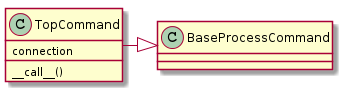
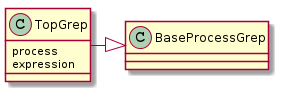

The Top Command¶
This is a substitute for the ps command in the cases where it is not available. The device for which it is intially being built is an iPad.
Top Requirements¶
The top command on the iPad does not behave exactly like the GNU top and so anyone using this must make sure that:
The syntax for getting a single (non-interactive) output (the flag below is an ‘l’ as in ‘larry’):
top -l 1The top command outputs all the processes (some versions of top will only output what fits on the screen)
The top command does not need the TERM variable set when run via non-interactive ssh
The first two columns of output are PID and COMMAND
The Top Command¶
| TopCommand(*args, **kwargs) | The Top Command issues commands and watches for errors |
| TopCommandError | A command to raise if there is a problem with the top command. |


- Parent: BaseProcessCommand <base-process-command>
Subclasses¶
- None
Responsibilities¶
- Sends top command to a connection to a device
- Checks for error-messages specific to the top command.
- Generates output from the top command
Collaborators¶
- Connection
Example Use:
connection = SSHConnection(hostname='elin', username='tester')
top = TopCommand(connection)
for line in top():
print line
The TopGrep¶
| TopGrep(*args, **kwargs) | The Top command adapted to extract process IDs. |
| TopGrepError |

- Parent: BaseProcessGrep <base-process-grep>
Subclasses¶
- None
Responsibilities¶
- Calls the TopCommand and traverses its output
- Extracts fields from lines that match the indicated process-names
- Yields all extracted fields
Collaborators¶
- TopCommand
Example Use:
connection = SSHConnection(hostname='elin', username='tester')
grep = TopGrep(connection, 'iperf')
for pid in grep():
print pid
Note
Since the TopGrep is implemented in this case to directly use the TopCommand it acts as a Builder for it, making the collaboration with the TopCommand somewhat obscure.
The advantage in having this relationship is that you can change the TopCommand by changing the TopGrep connection:
connection_1 = SSHConnection(hostname='elin', username='tester')
connection_2 = SSHConnection(hostname='bob', username='tester')
grep = TopGrep(connection)
for pid in grep():
print pid
grep.connection = connection_2
for pid in grep():
print pid
Testing the Top¶
| TestTop.test_constructor() | Does the constructor have the expected signature? |
| TestTop.test_wrong_command(*arg, **kw) | Does the TopCommand raise a TopCommandError if top isn’t installed? |
| TestTop.test_bad_argument(*arg, **kw) | Does TopCommand raise a TopCommandError if a bad command is given? |
| TestTop.test_standard_error(*arg, **kw) | Does an error from standard error get passed to the checker? |
| TestTopGrep.test_constructor() | Does the constructor have the expected signature? |
| TestTopGrep.test_call() | Does the __call__ return all the matching PIDs? |
| TestTopGrep.test_expression() | Does the expression match the output lines correctly? |
| TestTopGrep.test_unmatched() | Does the expression not match lines similar to the process-lines? |
| TestTopGrep.test_call_parameter() | Does passing in the name of the process override the process passed in on construction? |
| TestTopGrep.test_cpu_field | |
| TestTopGrep.test_change_connection() | Does the TopCommand get a new connection if you change the TopGrep’s connection? |
| TestTopGrep.test_substring() | Does it only match complete strings, not substrings of other processes? |